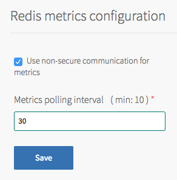
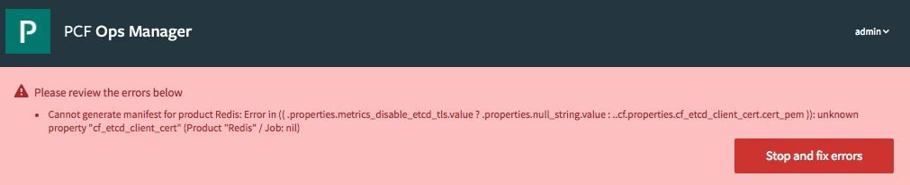
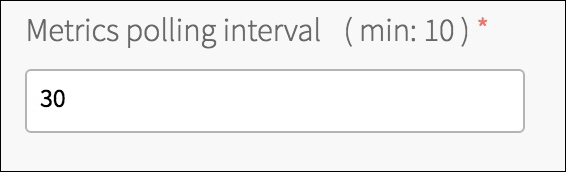

Monitoring Redis for PCF
The PCF firehose exposes Redis metrics.
Configuring Secure Communication
Redis for PCF v1.7.2 adds the ability for the operator to turn on/off TLS communications for metrics, via a Use non-secure communication for metrics checkbox on the metrics configuration
page in Ops Manager. You should configure this checkbox for different versions of PCF as follow:
PCF v1.8: This checkbox must be checked for metrics to be emitted to the Firehose.
PCF v1.9: Metrics communications are secure by default but will work in a non-secure mode.
PCF v1.10 and later: Metrics communications are secure by default so this checkbox must be unchecked for metrics to be emitted to the Firehose.

If this checkbox is incorrectly set, this error Cannot generate manifest for product Redis: Error in (( .properties.metrics_disable_etcd_tls.value ? .properties.null_string.value : ..cf.properties.cf_etcd_client_cert.cert_pem )): unknown property "cf_etcd_client_cert" (Product "Redis" / Job: nil) will be displayed:

Polling Interval
The metrics polling interval defaults to 30 seconds. This can be changed by navigating to the Metrics configuration page and entering a new value in Metrics polling interval (min: 10).

Third-party monitoring tools can consume Redis metrics to monitor Redis performance and health. For an example Datadog configuration that displays some of the significant metrics outlined below, see the CF Redis example dashboard. Pivotal does not endorse or provide support for any third party solution.
The following example shows the number of available instances for the Dedicated-VM plan metric:
origin:"p-redis" eventType:ValueMetric timestamp:1480084323333475533 deployment:"cf-redis" job:"cf-redis-broker" index:"3be5f4b9-cdf3-45c4-a3b2-19d923d63a01" ip:"10.0.1.49" valueMetric:<name:"/p-redis/service-broker/dedicated_vm_plan/available_instances" value:4 unit:"" >
Redis Metrics
Redis emits a number of metrics that can be used to monitor the health and performance of your Redis deployment.
keyspace_hits
| Description | Number of successful lookups of keys in the main dictionary. “/p-redis/info/stats/keyspace_hits” |
|---|---|
| Significance | In conjunction with keyspace_misses, it can be used to calculate the hit ratio. |
| Notes | A successful lookup is a lookup on a key that exists. |
keyspace_misses
| Description | Number of unsuccessful lookups of keys in the main dictionary. “/p-redis/info/stats/keyspace_misses” |
|---|---|
| Significance | In conjunction with keyspace_hits, it can be used to calculate the hit ratio. |
| Notes | An unsuccessful lookup is a lookup on a key that does not exist. |
used_memory
| Description | Number of bytes allocated by Redis. “/p-redis/info/memory/used_memory” |
|---|---|
| Significance | Grows as the number of unsaved keys increases. |
maxmemory
| Description | Maximum number of bytes available in Redis. “/p-redis/info/memory/maxmemory” |
|---|---|
| Significance | Indicates the max memory available in Redis. |
blocked_clients
| Description | Number of connected clients pending on a blocking call. “/p-redis/info/clients/blocked_clients” |
|---|---|
| Significance | Can be used as an indicator to detect deadlocks. |
connected_clients
| Description | Number of clients connected to the Redis instance. “/p-redis/info/clients/connected_clients” |
|---|
rdb_changes_since_last_save
| Description | Number of keys currently in memory. “/p-redis/info/persistence/rdb_changes_since_last_save” |
|---|---|
| Significance | Memory usage grows in proportion to the number of keys in memory. If the Redis instance is stopped ungracefully, these changes may be lost. |
| Notes | Performing a BGSAVE writes these keys to disk and frees up memory. |
total_commands_processed
| Description | Total number of commands processed by Redis. “/p-redis/info/stats/total_commands_processed” |
|---|---|
| Significance | A crude indicator of activity. Can be used in conjunction with uptime_in_seconds. |
mem_fragmentation_ratio
| Description | Ratio of memory allocated by the operating system to the memory requested by Redis. “/p-redis/info/memory/mem_fragmentation_ratio” |
|---|---|
| Significance | A ratio in excess of 1.5 indicates excessive fragmentation, with your Redis instance consuming 150% of the physical memory it requested.. |
total_instances
| Description | Total number of dedicated-vm instances of Redis. “/p-redis/service-broker/dedicated_vm_plan/total_instances”
|
|---|---|
| Significance | Used in conjunction with available_instances, provides information about used instances. |
available_instances
| Description | Number of available dedicated-vm instances of Redis. “/p-redis/service-broker/dedicated_vm_plan/available_instances”
|
|---|---|
| Significance | If zero, no more instances are available. |
total_instances
| Description | Total number of shared-vm instances of Redis. “/p-redis/service-broker/shared_vm_plan/total_instances”
|
|---|---|
| Significance | Used in conjunction with available_instances, provides information about used instances. |
available_instances
| Description | Number of available shared-vm instances of Redis. “/p-redis/service-broker/shared_vm_plan/available_instances”
|
|---|---|
| Significance | If zero, no more instances are available. |
Other Metrics
Redis also exposes the following metrics. for more information, see the Redis documentation.
arch_bitsuptime_in_secondsuptime_in_dayshzlru_clockclient_longest_output_listclient_biggest_input_bufused_memory_rssused_memory_peakused_memory_luamem_fragmentation_ratioloadingrdb_bgsave_in_progressrdb_last_save_timerdb_last_bgsave_time_secrdb_current_bgsave_time_secaof_rewrite_in_progressaof_rewrite_scheduledaof_last_rewrite_time_secaof_current_rewrite_time_sectotal_connections_receivedtotal_commands_processedinstantaneous_ops_per_sectotal_net_input_bytestotal_net_output_bytesinstantaneous_input_kbpsinstantaneous_output_kbpsrejected_connectionssync_fullsync_partial_oksync_partial_errexpired_keysevicted_keyskeyspace_hitskeyspace_missespubsub_channelspubsub_patternslatest_fork_usecmigrate_cached_socketsconnected_slavesmaster_repl_offsetrepl_backlog_activerepl_backlog_sizerepl_backlog_first_byte_offsetrepl_backlog_histlenused_cpu_sysused_cpu_userused_cpu_sys_childrenused_cpu_user_childrencluster_enabledrdb_last_bgsave_statusaof_last_bgrewrite_statusaof_last_write_status